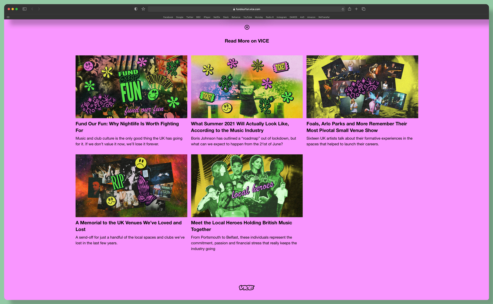
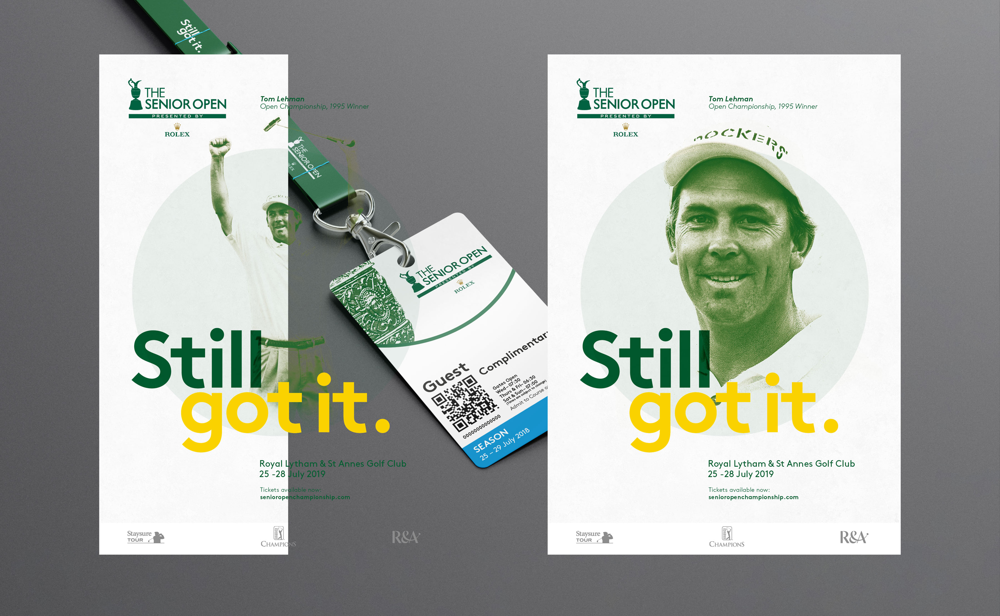
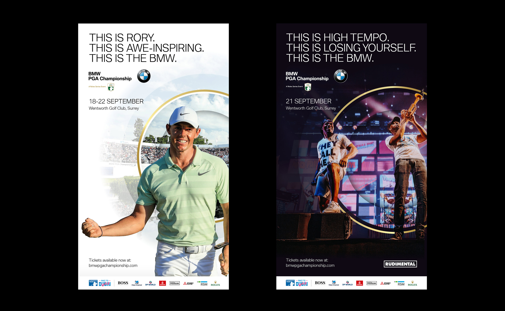

A Concrete JUNGLE.

Ongoing project about the setting and architectural complex of Leeds University. Set in concrete, the university has sat in Leeds for over 60 decades and has matured over the years into somewhat a spectacle.
This publication will follow the architects that created Leeds University and the people who live and work around it.
Editorial, Photography, Print.
Leeds University, 53°48’19.3”N 1°33’16.7”W
FUND OUR FUN
FUN
Collaboration with VICE.
Photographs taken in and around Leeds of music venues that have been closed for several years. VICE analysis, in collaboration with Music Venue Trust, reveals that there have been 154 closures and 390 venues at risk since 2016 in the UK. A map of venue locations has been put together to create awareness and discussion of venues that are closing or are closed.
Photography, Identity, Editorial.
Client - VICE
https://fundourfun.vice.com
-

- 
-

THE SENIOR OPEN
OPEN

Lead on the campaign for the 2019 European Tours event, The Senior Open. Whilst working at ‘The Lift Agency’.
The Senior Open is a professional golf tournament for players aged 50 and over. It is run by The R&A, the same body that organises The Open Championship.
Identity, Artworking, Print & Editorial.
Client - The European Tour whilst working with The Lift Agency.
https://www.theliftagency.com
-

-

- 
-

A KITCHEN GARDEN IN TUFNELL PARK.
KITCHEN
GARDEN
INTUFNELL
PARK.

A 250 page publication designed and printed to a very high standard. It follows a gardener who discovered and built his own kitchen garden in the middle of London, documenting it from the start to its end.
Kitchen gardens were once scattered all over Britain, many have been either lost to the plough, or in this case, kept and preserved and then eventually brought back to life. The clients love for gardening and horticulture saved this particular kitchen garden.
Art Direction, Print Management, Editorial, Photography & Identity.
Client - William Grout Garden Design, London
51°33’17.2”N 0°07’41.6”W


THE BMW
Lead on the campaign for the 2019 European Tours event, The Senior Open. Whilst working at ‘The Lift Agency’.
The Senior Open is a professional golf tournament for players aged 50 and over. It is run by The R&A, the same body that organises The Open Championship.
Identity, Artworking, Print & Editorial.
Client - The European Tour whilst working with The Lift Agency.
https://www.theliftagency.com
- 
-